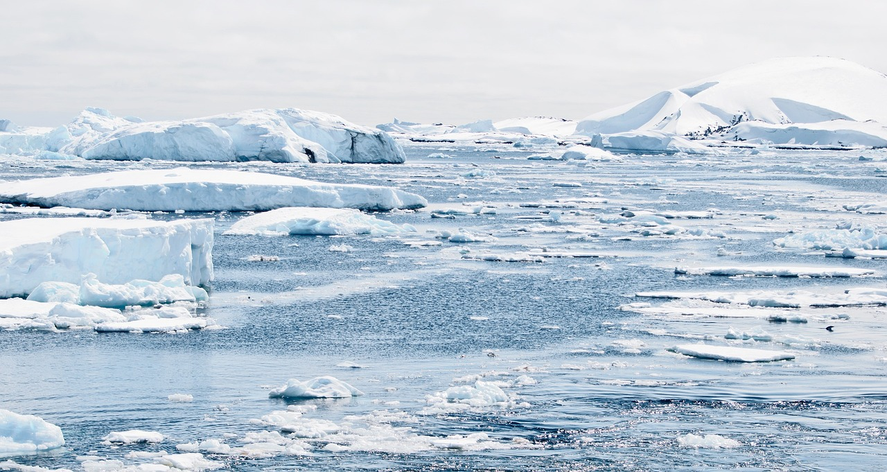
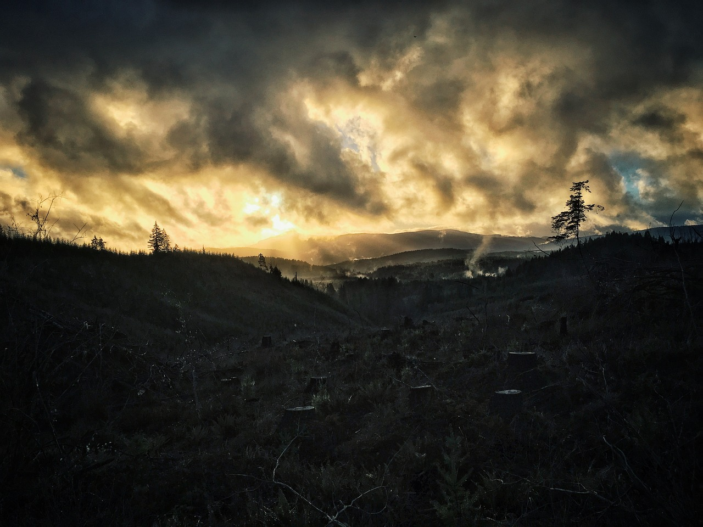

Threats
Regrettably, human activities have created an inhospitable future for both bears and the natural world.
The impact of global warming has had severe consequences on polar bear populations, primarily through the loss of their
crucial sea ice habitat. The Arctic region is experiencing an alarming rate of warming, twice as fast as anywhere else on the
planet. Furthermore, Arctic sea ice coverage is diminishing by 14% annually. As ice forms the foundation of their existence, the
absence of it translates to reduced feeding opportunities, fewer cub births, and the fragmentation of their habitat.

Giant pandas are among the animals listed as threatened species. The expansion of infrastructure has resulted in the confinement
of pandas to smaller habitats, leading to a potential scarcity of food resources. These circumstances also hinder their ability to
find suitable mates, resulting in limited cub births. Although poaching was once a concern for these beloved bears, strict legislation
has helped address the issue and protect them from harm. However, pandas still face occasional risks, such as unintentionally getting
ensnared in traps originally set for deer or other animals.

While sloth bears do not face the same level of threat as polar bears and pandas, they are classified as "vulnerable."
Similar to pandas, their population decline is attributed to habitat loss. However, the primary reason for their diminishing
numbers is poaching. Some poachers mistakenly believe that the bears' bladder possesses medicinal properties to cure specific
ailments. Additionally, sloth bears have earned a reputation for being responsible for more human fatalities compared to other
bear species. However, it is unfortunate because these bears typically attack only when they feel threatened and would much prefer
to flee from humans rather than engage in a confrontation.